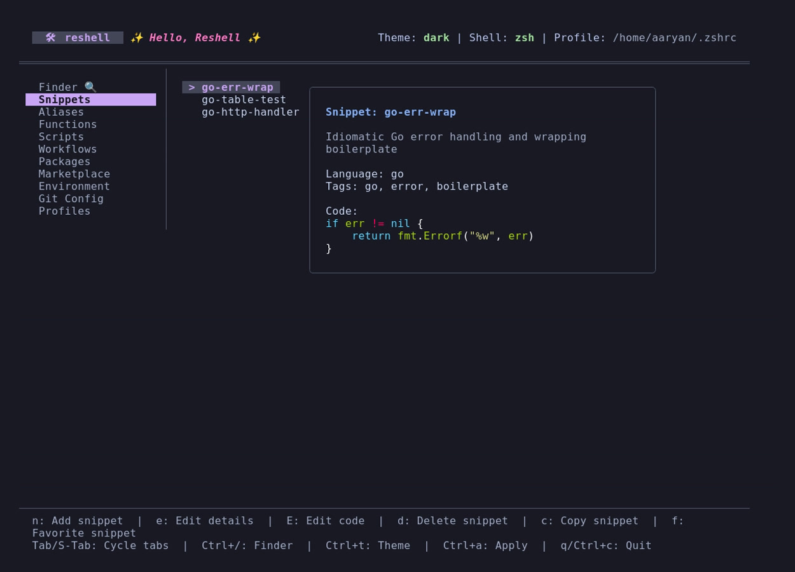
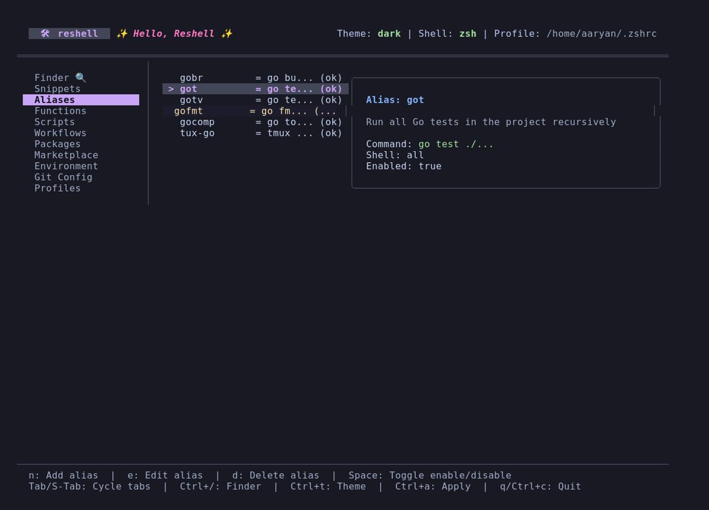

Snippets & Aliases
This section explains how to manage script snippets and shell command mappings.
Snippets
Snippets are reusable code blocks or templates stored in ~/.config/reshell/snippets.toml.

Adding Snippets
Create a snippet using the command-line interface:
reshell snippet add <name> <code> [description] [--tags <tags>] [--lang <language>]
Options:
-t, --tags: Comma-separated tags (e.g.--tags "docker,infra").-l, --lang: Programming/scripting language (lexer syntax) of the snippet (e.g.--lang "python"). Defaults tobash. If an unrecognized language is entered, a warning is printed and it falls back tobash.
Alternatively, open the dashboard (reshell), navigate to the Snippets tab, and press n to open the creation form.
Dashboard Actions
- Editing Details (
e): Opens a TUI input form to edit snippet metadata (Name, Description, Tags, and Language). If you change the Name, the snippet will be renamed. - Editing Code (
E): Opens the selected snippet code block in a temporary.txtfile using your preferred terminal text editor (defined by$EDITORorconfig.toml). Snippets are written as plain.txtfiles to prevent text editors from forcing incorrect formatting on multi-language snippets. - Copying (
corEnter): Copies the highlighted snippet code directly to the host system clipboard. - Favorite (
f): Toggles the favorite status of the highlighted snippet. Favorite snippets are highlighted with a star (★) symbol in the sidebar.
Aliases
Aliases map command shortcuts to longer terminal commands. They are stored in ~/.config/reshell/aliases.toml.

Conflict Verification
When creating or modifying an alias, the engine verifies the name to prevent collision issues:
- System Path Check: Verifies if the alias name collides with an existing binary in your
$PATH(e.g.,lsorgrep). - Function Verification: Checks if a custom shell function is already registered with the same name.
- Duplicate Check: Checks for duplicates in your existing alias list.
Warnings are displayed if conflicts are found, but you can override them if needed.
Toggling State
To temporarily disable an alias, highlight it in the Aliases tab of the dashboard and press Space. Disabled aliases are excluded from the compiled configuration script during the next reshell apply execution.